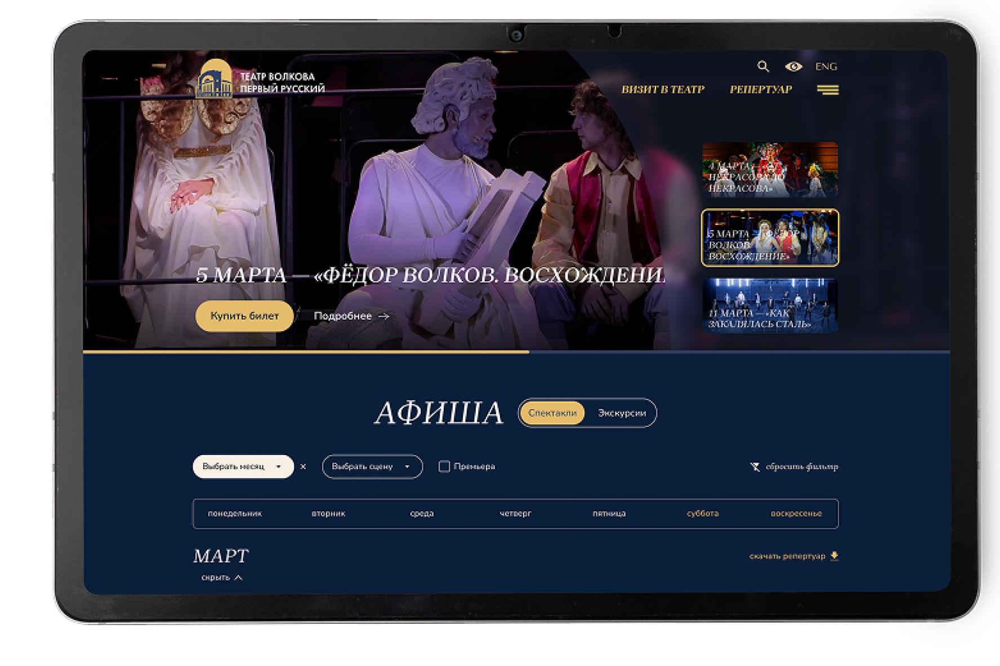

Театр Волкова ↗
11 лет работыОбеспечиваем регулярную техподдержку сайта на 1С-Битрикс: развитие и улучшение сайта, защиту от внешних угроз, постоянное развитие мобильной версии и запуск десятка доп-проектов: от сайта московских гастролей, до «Волковской энциклопедии».
Доля онлайн-продаж за годы сотрудничества выросла с 8% до 94%.
